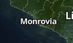
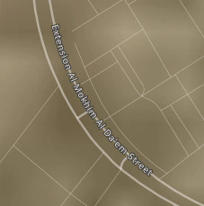
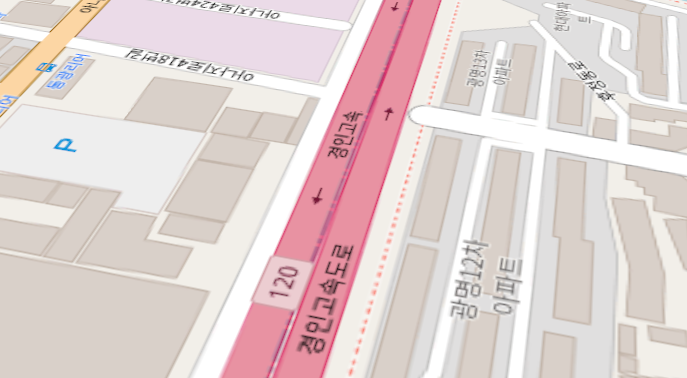
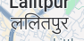

Text labels rendering on a map with Rust - research and design
For the last week I have been researching problems and possible solutions for text rendering in Galileo. There is quite a lot to consider, so I have decided to summarize my findings to bring some clarity to all the parts of the proposed action vector.
What we want to achieve
A full-fledged text rendering for a mapping engine would include:
-
labels attached to a geographic point with fixed screen size

-
labels drawn along a path

-
labels attached to the map surface (optional, but would be nice to have)

All of these must:
- render correctly any Unicode string
- allow the application to choose font and font parameters
- work on Desktop, Mobile and Web platforms
- render with 60 FPS with any reasonable amount of data (although pre-rendering may take more time since we can do it in a background thread or in a web worker)
Font discovery
For the engine to be able to draw a text, it must first load a font. And to do that, it must know where the font file is located and how to get it. There are a few crates that can help locate system fonts in cross-platform manner:
- font-kit - used by
servo, works for desktop and mobile platforms. Uses system libraries to locate fonts, so the result is probably the best for the supported platforms. Allows font queries (CSS compatible). - font-loader - locates fonts on desktop platforms in predefined directories. No queries.
- fontdb - used by
cosmic-text, readme states that it locates fonts in predefined directories and does not interact with system API, but source code seems to usefontconfigfor Unix-like systems. Allows css-like queries.
In case of web, the only way to locate available fonts is to use experimental Local Font Access API, but it is supported only by Edge and desktop Chrome.
Another consideration with font discovery is that Galileo is supposed to be used as a part of a bigger application, that already uses some way of font discovery for its own use. So we want to have a way for Galileo to request a needed font from the application layer instead of using its own discovery method.
This doesn’t work on the web though, as Galileo won’t have access to the fonts the application uses (except through Local Font Access). So for web the only viable option is for the application to configure available font list in advance, or make Galileo font agnostic using Canvas rendering.
Text rendering process
1. Font loading
Loading a font on non-web platforms is straightforward. We can read a file found in discovery stage or load a font from raw byte data provided by the application, and parse it with tools provided by shaping libraries we choose.
On the web, the application or Galileo itself can load font data from an url, as there’s no access to either system fonts or fonts loaded through CSS. The problem here is that a full set of fonts to render all major script types (languages) can take tens of MB, which is quite heavy for a web application.
The approach that MapboxGL (and consequently MapLibre) took is to not load fonts as is, but to request glyph sets from a web service. This way only glyphs that are actually needed for currently displayed area of the map can be loaded. This approach on the other hand doesn’t allow text shaping, as it requires actual font tables to be loaded. I am not sure if it’s possible to extract tables needed for shaping from a font file and load only them without heavy glyph data.
Another solution would be not to load fonts at all if we use Canvas for glyph rendering, but this has its own problems (see below).
Libraries that can be used for loading of font data:
- HarfBuzz has built in font loader (C++)
- ttf-parser - used by
rustybuzz - swash also uses its own loader
2. Font selection and fallback
There are no font files that contain glyphs for all unicode symbols (such font is impossible due to how specifications are written, but even if it would be possible, such font would be very, very heavy). Also, each font family usually contains different font files (faces) for different styles, like bold, thin, italic etc. So when an application requests a label to be rendered, we must consider:
- font family (e.g. “Noto Sans”)
- font style (“regular”, “bold”, etc.)
- script and language of the text in label (if different scripts are used in the same label, we need to separate it into blocks)
Taking all these into account, the library can select an appropriate font face among the available ones.
If no exact match found, the usual approach is to select a default fallback font, which is expected to be available and contain all needed scripts and parameters.
- font-kit implement CSS-style font selection and fallback (not available for web)
- cosmic-text has font fallback logic for desktop platforms
3. Text shaping
To correctly transform a unicode string into a set of glyphs to render, the text must be shaped. This step is important for some complex scripts that use ligatures and can change how symbols are written based on what surrounds them.
Here is an example for devanagari script:
| Without shaping: | |
| With shaping: |  |
Libraries that implement shaping:
- HarfBuzz is the golden standard for text shaping. It used by all major browsers and most UI frameworks. There are rust bindings for it. It can be compiled to WASM in theory but this way is not for the faint of heart.
- RustyBuzz is a port of HurfBuzz up to version 4.01 (current HarfBuzz is 8.x). Nevertheless, it supports most of the common cases and can be easily built to any platform.
- Swash less tested and feature-full than
RustyBuzzbut still viable solution. The development was not very active for the last couple of years though.
4. Glyph rasterization
After all the above is done, glyphs can be finally rendered. There is a caveat here also - to render small font sizes on low DPI screens font hinting should be used, otherwise the characters would look poor.
- C++ world uses
FreeTypelibrary together withHarfBuzzshaping to rasterize glyphs using hinting. - Rust world has only
Swashat this time. - Mac users live happily without font hinting as their screens are high DPI.
Note
We are not concerned at the moment with:
- text layout (e.g. line breaks, paragraphs etc.) as most labels on a map are one-line short labels. We can support
manual line breaks with
\nsymbol and text alignment, and that should be enough for a while - glyph caching - it can increase performance significantly, but it can be implemented almost independently later
Possible implementations
Using cosmic-text
Pros:
- font discovery with
fontdb, shaping withrustybuzz, rasterization withswashout of the box - provides access to
rustybuzzface to outline for tessellation, so attaching labels to the map surface would also look good
Cons:
- Loads all system fonts into
fontdbat startup, which can take a while (up to a second according to the docs). Applications already usingcosmic-text(orfontdb) can provide already built DB, bot for others this can be a downside. On the other hand, we probably can disable system fonts loading and tell the db which fonts to load. - Wasm would require loading a full font set for a map, which is a lot.
- Makes the compiled bundle much bigger, which can be bad for WASM (and to some extent for Mobile)
Using Canvas rendering
This is only for web. The approach is to render separate words using Canvas 2d API, and then use rendered image as a texture for label.
- Uses the whole power of
harfbuzzandfreetypeunder the hood, with browser font access and fallback, so everything will be rendered correctly. - Lightweight
Cons:
- Text must be rendered word by word to produce correct shaping result. Because of that, a label along a path would turn only at word end, not at glyph end.
- Might be slow due to interop between WASM and JS worlds.
- Cannot produce tessellation, so a label attached to the map surface might look poor
It seems that this is the approach taken by Google Maps for their labels. But for them, it might be faster because they don’t send images to WASM.
Using harfbuzz and freetype
Pros:
- would produce the best result
Cons:
- Building C++
- Building for WASM might be a challenge
Conclusion
Overall, the approach I’m inclined for is to first implement this using cosmic-text, as this will work on all platforms.
But while implementing it, leave possibility to add other implementations later (feature-gated), notable Canvas-based
one to use for web when loading 10s of MB is not good.